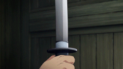
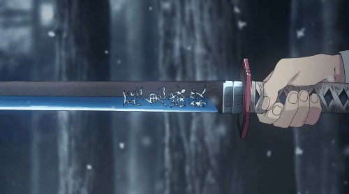
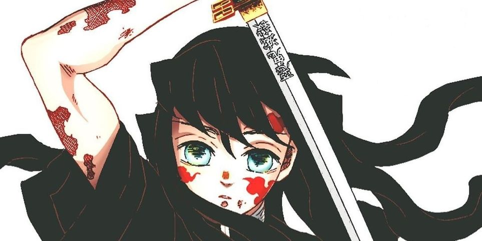
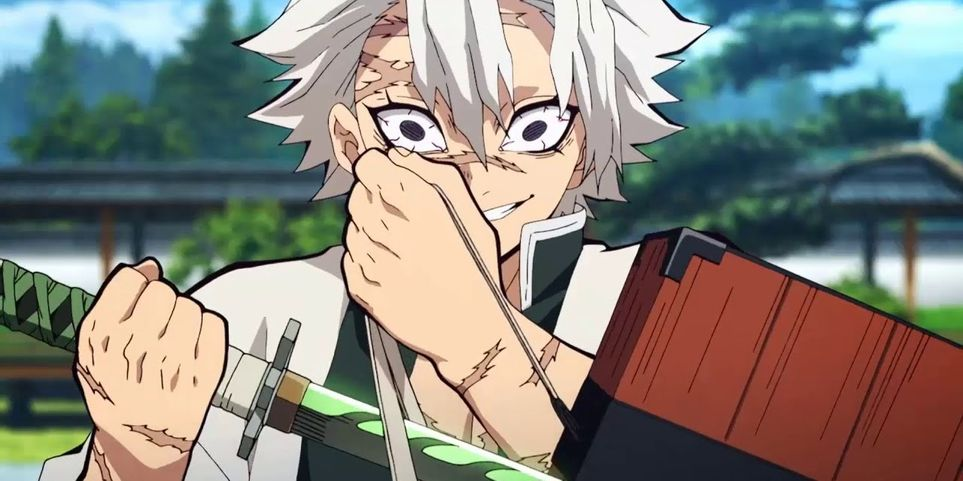
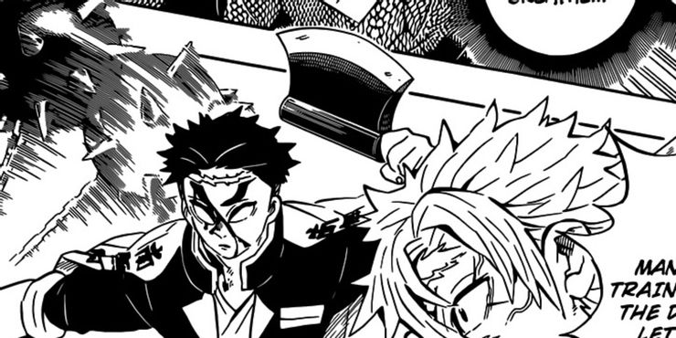
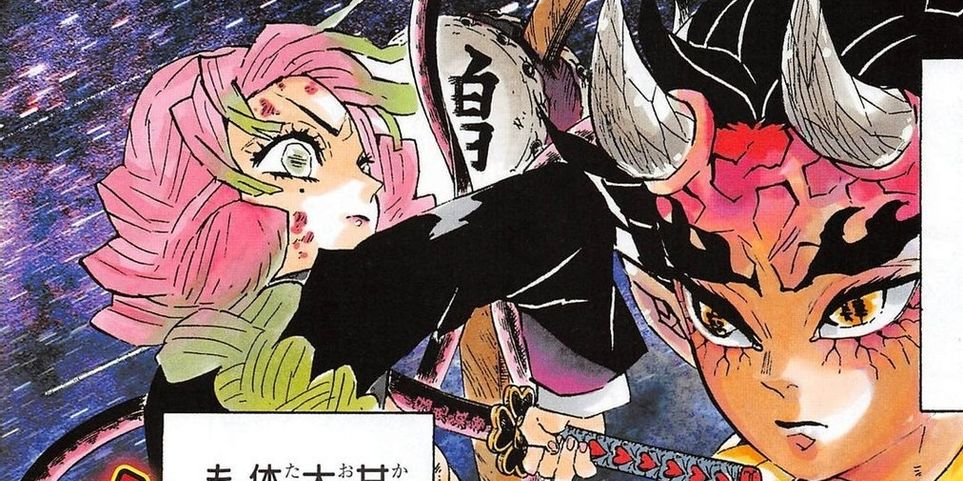
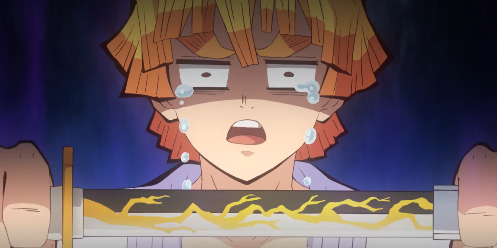
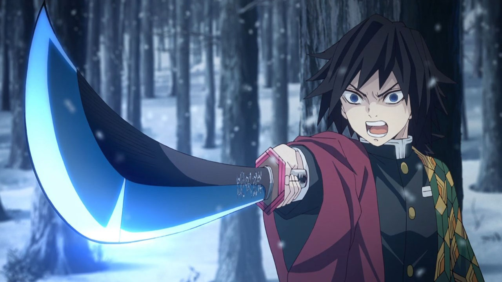
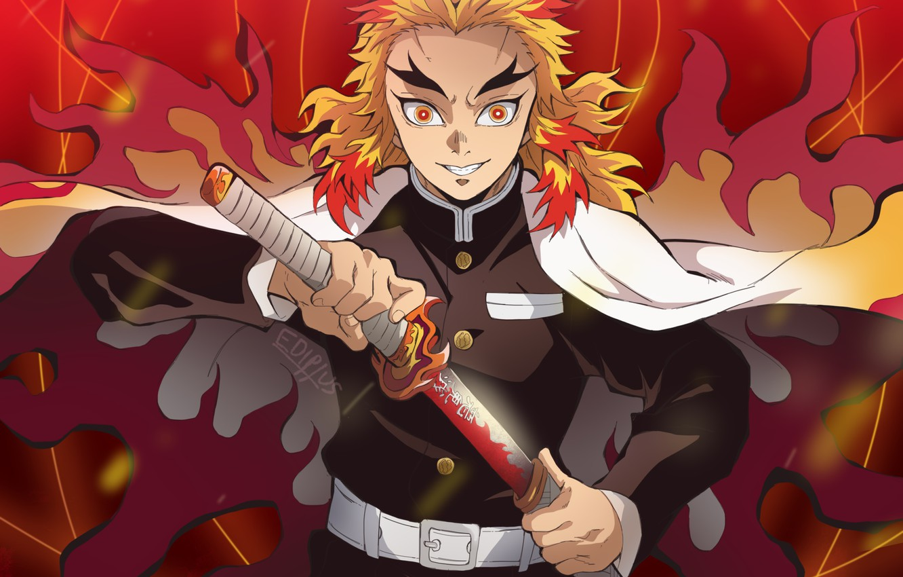
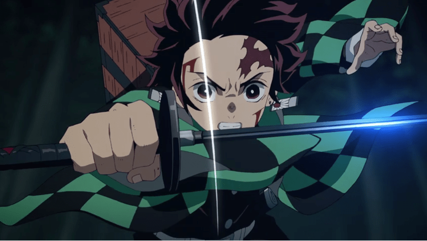

Nichirin Blades (日にち輪りん刀とう Nichirin tō) are special blades used by and made specifically for the Demon Slayer Corps to slay Demons. They are forged from a unique ore that constantly absorbs sunlight, one of the only major weaknesses of Demons. Therefore, decapitation by Nichirin Blade is one of the only ways a human can kill a Demon, the other being the use of a Wisteria-poison coated weapon.

Nichirin Blades take on a distinct color when first drawn by its owner, which is why they are also referred to as "The Color Changing Swords". However, the holder is required to have a certain amount of skill, or the blade will not change color.

Forging Process
Nichirin Blades are forged with Scarlet Crimson Iron Sand and Scarlet Crimson Ore, both of which are found on high mountains like the Sunlight Mountain, which is perpetually bathed in sunlight all throughout the year.
Demon Slayer recruits choose their own ore after successfully passing the Final Selection. The ore will then be used by a swordsmith of the Swordsmith Village during the forging process, and the swordsmith will personally bring the weapon to the Demon Slayer.
Nichirin Blade Colours
White

The first sword color on this list is the white blade, which symbolizes mist. As such, the demon slayer who wields a white Nichirin Blade is Muichiro Tokito, the Mist Pillar of the Demon Slayer Corps. The Breath of Mist style is derived from the Breath of Wind.
Muichiro can be quite air-headed, constantly lost in his own thoughts and not being able to focus on one thing. There's just something about his personality that makes him perfect for the Breath of Mist style and the white Nichirin Blade.
Green

Next up is the green Nichirin Blade, which symbolizes wind and is wielded by the hot-blooded Wind Pillar of the Demon Slayer Corps, Sanemi Shinazugawa. With his trusty green blade in hand, Sanemi brings his cyclone of fury to any demon he crosses.
Sanemi is just as boisterous and cyclonic as the breath style he's mastered, unleashing tornadoes of sword slashes on the demons unlucky enough to face him.
Gray

The gray Nichirin Blade symbolizes stone, so, of course, the Stone Pillar of the Demon Slayer Corps, Gyomei Himejima, wields a gray blade. The symbol of the stone nicely reflects Gyomei's personality, both strong and sturdy. Gyomei is a gentle giant but still has an intimidating presence. He's soft-spoken and emotional, but he's also the strongest current demon slayer.
Unlike the traditional Nichirin Blade, Gyomei uses a hand-ax that has a spiked flail attached to the hilt through a long chain. His weapon was also forged using a superior technique than that of the Nichirin Blade, but it is forged with the same unique ore.
Pink

The pink Nichirin Blade symbolizes love and belongs to the Breath of Love style. This blade color is used by Mitsuri Kanroji, the Love Pillar of the Demon Slayer Corps. It's no surprise Mitsuri's Nichirin Blade turned pink. She's an emotional and passionate person, she's shy and bubbly, and she's always complimenting people (at least in her head).
What's interesting about her Breath of Love style is that she created it herself and the style can only be used by her thanks to the unique constitution of her body. She's flexible and agile (she's the fastest of the Pillars), but still possesses inhuman strength due to having muscles 8 times more dense than normal, without losing any speed.
Indigo-Gray
The indigo-gray Nichirin Blade is perfect for slaying demons, and its color represents the beast. None other than the boar-head wearing demon slayer, Inosuke Hashibira, wields not one but two indigo-gray blades. After living his life in the mountains, Inosuke developed some beast-like qualities. He's short-tempered and extraordinarily proud, making a big deal of fighting opponents stronger than him.
Inosuke developed the Breath of the Beast himself after living in the mountains. This unique breathing style, which is derived from the Breath of Wind technique, gives Inosuke an enhanced sense of touch.
Yellow

The yellow Nichirin Blade, one of which belongs to Zenitsu Agatsuma, symbolizes thunder. Zenitsu may have low self-esteem and may seem like a coward, but when the situation demands it, he lets his true power show at the speed of lightning. Zenitsu's true strength shows up as unexpectedly and explosively as thunder itself.
While most Nichirin Blades take on colors as a solid band running down the length of the blade, the coloration on Zenitsu's blade is unique in that it instead forms a lightning bolt motif down the length of the blade. It isn't known why his blade took on that pattern, but it does make for an awesome looking sword.
Blue

The blue Nichirin Blade symbolizes water, and it's also the first Nichirin Blade we see in the series. Giyu Tomioka, the Pillar of Water of the Demon Slayer Corps, wields a blue blade that he uses with his Breath of Water style, making him one of the most formidable among the Pillars.
Tomioka's fighting style is very water-like. He moves in a fluid, almost effortless motions to make short work of demons. He killed both the Father Spider Demon and Rui, the Lower Moon Five demon, with one fluid motion in each kill.
Red

The red Nichirin blade, wielded by Kyojuro Rengoku, symbolizes flame. The brightly-burning Flame Pillar is wonderfully charismatic and often cheerfully eccentric. He has a strong sense of morals and his passion for demon slaying burns with the intense heat of a raging flame.
Like Zenitsu's blade, Kyojuro's blade color took the form of a unique pattern. The red color of his blade manifested in a flame motif that runs down the length of his blade that looks spectacular in conjunction with his Breath of Flames style
Black

Capping off this list is the mysterious black Nichirin Blade. The series main character, Tanjiro Kamado, wields a black Nichirin Blade, but the symbolism of the black blade is unknown. The reason for this is because black blades are seen as a rarity, as demon slayers who wield them don't have a tendency to live long, let alone becoming a Pillar of the Demon Slayer Corps.
There are a lot of fan theories out there guessing at the meaning of the black blade. One theory suggests that Tanjiro's sword turned black as an analogy to charcoal, which ties into Tanjiro's past job selling charcoal. Another theory (which contains spoilers for the manga) suggests that black blade users are users of the Breath of the Sun style. Black is commonly known as being all the colors combined, just as the five main breathing styles are derived from the Breath of the Sun style.